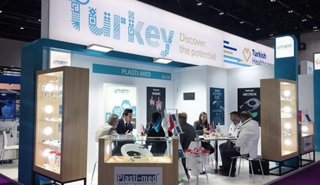
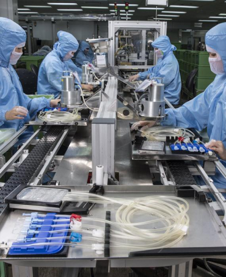
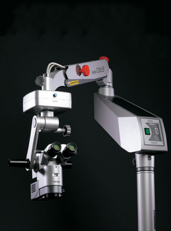
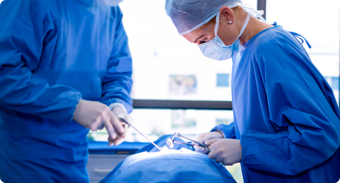
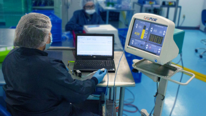
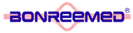
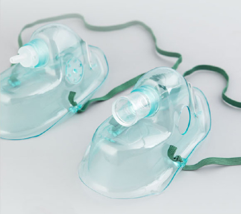
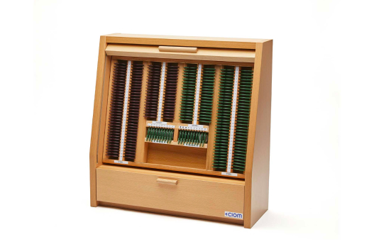
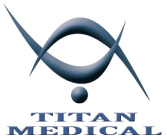
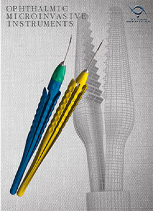

НАШИ ПАртНЕРЫ – Всемирно известные производители медицинских изделий и оборудования с гарантированно высоким качеством
-
Компания Пласти-мед была основана в 1995 году и является одним из крупнейшим производителем одноразовых медицинских принадлежностей в Турции. Пласти-мед производит одноразовые медицинские расходные материалы для анестезии, дренажа, урологии, гинекологии и общего назначения. Компания изготавливает продукцию в соответствии с международными стандартами.
Среди ассортимента урологических товаров Вы можете видеть катетеры для нефрастомии, мочеточниковые катетеры, проводники, стенты, петли, корзины для извлечения камней и прочие. Ассортимент анестезиологических товаров представлен фильтрами, контурами, масками, мешками типа Амбу и т.д. -
Baxter - американская компания, основанная в 1931 году. Почти столетие они являются пионерами в области медицинских инноваций, которые изменили здравоохранение. Высокое качество производимой продукции, их постоянное совершенствование – неотъемлемая черта деятельности Baxter. Во всех странах продукция компании отвечает одним и тем же высочайшим стандартам, производственный процесс тщательно контролируется на всех стадиях. Ключевыми товарными позициями производителя являются хирургические герметики, применяемые в кардиохирургии, торакальной и абдоминально-тазовой хирургии и гемостатики, предназначенный для хирургических процедур в дополнение к гемостазу.
 -

Quantel Medical – компания, которая уже более 15 лет разрабатывает, производит и продает инновационные медицинские лазерные и ультразвуковые решения. Quantel Medical - мировой лидер в области офтальмологии, его лазеры и ультразвуки предназначены для диагностики и лечения четырех основных причин слепоты: катаракты, глаукомы, диабетической ретинопатии и дегенерации желтого пятна; а также сухость глаз. Компания славится своим передовым, современным оборудованием, таким как, аппараты ультразвуковые диагностические офтальмологические аппараты, аппараты для YAG лазерной фотодиcрапции (лазерное лечение), а также аппараты лазерные для фотокоагуляции сетчатки.
 -

Topcon Healthcare - компания, специализирующаяся на здоровье глаз. Компанией представлены интеллектуальные и эффективные технологии для улучшения ухода за пациентами. Topcon Healthcare предлагает новейшие интегрированные решения и помогает бороться с заболеваниями глаз у стареющего населения, предоставляя поставщикам передовые решения для визуализации, диагностики и интеллектуальные технологии обработки данных. Компания предлагает решения для раннего выявления и лечения заболеваний глаз. Ассортимент широко представлен в части офтальмологического оборудования, такого как: - авторефкератометр - прибор для офтальмологического измерения; - компьютеризированный тонометр– для получение диагностической информации. - цифровые щелевые лампы - приборы премиум-класса, для наблюдения/диагностики глазного яблока и его частей с увеличением; - а также микроскопы для операций, лечения и обследования.

-
SCW MEDICATH LTD, основанная в 1996 году, является первой фабрикой по разработке и производству центральных венозных катетеров и датчиков давления в Китае. Производитель, SCW специализируется в области интенсивной терапии, акушерства и гинекологии, урологии, ортопедии и других дорогостоящих медицинских принадлежностей. Компания предоставляет продукты, которые соответствуют качеству лидеров рынка благодаря инновационному дизайну и экономичному производству. Среди представленной широкой лигнейки товаров Вы найдете в области акушерства и гинекологии (Баллонный маточный стент, послеродовой баллон с быстрой инстилляцией), а также изделия для урологии и рентгенэндоваскулярной хирургии.
 -

Компания Integra LifeSciences Сo. основана в 1989 году в США и является мировым лидером в области медицинских технологий. Integra является мировым лидером в области нейрохирургии и предлагает широкий ассортимент продуктов и решений для доступа и восстановления твердой мозговой оболочки, управления спинномозговой жидкостью и нейрореанимации. Также продукты, предназначенные для восстановления мягких тканей, нервов и сухожилий, а также для лечения острых и хронических ран, ожогов, а также для пластической и реконструктивной хирургии. Ключевыми продуктами являются изделия для герметизации твердой мозговой оболочки головного мозга и герметизирующая и противоспаечная система для твердой мозговой оболочки спинного мозга.

-

Итальянская офтальмологическая компания, основанная в 1993 году. Alchimia является одним из ведущих европейских производителей медицинских устройств для офтальмохирургии и банков тканей. Отдел исследований и разработок Alchimia, специализирующийся в области офтальмологии и обладающий большим опытом в области химии, биологии, биотехнологии и биоинженерии, заботится о здоровье пациентов. Компанией широко производятся изделия для офтальмохирургии (силиконовые масла, растворы медицинские для офтальмологии, устройства полимерное офтальмологическое для аспирации и ирригации)

-

Компания MED-LOGICS производит высококачественную продукцию в сфере офтальмологии с 1992 года. Компания придерживается высочайших стандартов качества, придерживаясь корпоративной культуры, основанной на семейной морали и ценностях. MED-LOGICS предлагает премиальные продукты для хирургии катаракты, хирургии и продукты для донорской ткани роговицы. Компания придерживается самых высоких стандартов, и это проявляется в корпоративной культуре, продуктах и услугах. Компания производит высококачественные одноразовые микрохирургические офтальмологические лезвия и проборы для кератопластики.
 -

Bonree Medical Co., Ltd была основана в 2015 году. Основной деятельностью компании является изготовление медицинских инструментов, используемых в больницах, терапии, неотложной и клинической помощи. Bonree Medical Co в основном специализируюется на исследованиях и производстве медицинских катетеров в урологии, дыхательной, анестезиологической и минимально инвазивной. Среди изделий представлены Катетеры Фолея, товары для урологии и минимально инвазивные продукты.
 -
CIOM — итальянская компания, специализирующаяся на производстве высококачественных пробных линз для исследования рефракции. Компания была основана в 1971 году в Милане, где до сих пор находится штаб-квартира и производственная площадка; На протяжении многих лет СИОМ зарекомендовал себя на рынке оптики и офтальмологии как точка отсчета, определив высокий уровень качества и стандарта дизайна и став надежным партнером и поставщиком для крупнейших компаний отрасли.
 -

Приоритетным направлением компании ТИТАН МЕДИКАЛ является производство и поставка микрохирургических инструментов для офтальмологии. Соблюдая традиции прошлого , а также используя передовой опыт современных лидеров по производству медицинских инструментов, наша компания удовлетворяет самым высоким требованиям ведущих офтальмохирургов разных стран мира.
 -

Volk Optical — ведущий производитель офтальмологических линз, средств диагностической визуализации и хирургических изделий для офтальмологической промышленности Компания Volk, основанная более 40 лет назад, продолжает объединять качество и ремесленное мастерство с современными технологиями, чтобы предоставить лучшие в мире офтальмологические линзы тем самым врачам, ученым и исследователям, которые выполняют миссию: искоренить предотвратимую слепоту! Линзы и устройства обработки изображений обеспечивают оптимальное использование в любых условиях с высоким уровнем эффективности и действенности. Это изменило процесс скрининга, диагностики и лечения предотвратимой слепоты в тех частях мира, которые имеют ограниченный доступ к ресурсам.